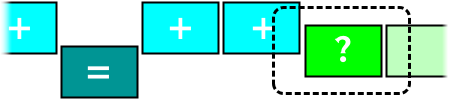
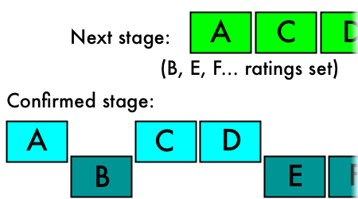

Rating in stages helps you make quicker decisions about your photos.
The following diagram shows part of a rating stage, with a dotted outline to mark the visible portion:

The green photos still need a decision for this stage. The dark green photo (labeled with the question mark) is shown in the center of the screen. Moving it down will leave it in this rating level. Moving it up will promote it to the next stage. Once you make a decision, the next photo will be moved into the center position.
The dark blue photo (labeled with the equal sign) has been left down in the current rating level. When this stage is confirmed, it will be rated at with this stage's number of stars.
The light blue photos (each labeled with a plus sign) have been promoted up from the current rating level. After this stage is confirmed, the next stage will be started with these photos, giving you a chance to rate with one additional star (by moving them down) or promote them again to an even higher stage (by moving them up again).

No ratings are actually applied until you confirm a stage.
By confirming, you apply the corresponding star rating to the photos left down in that stage.
Then if there are any promoted photos, a new stage begins at the next star rating level for those photos.
If you ever wish to exit a level early, use the options described in Navigating.